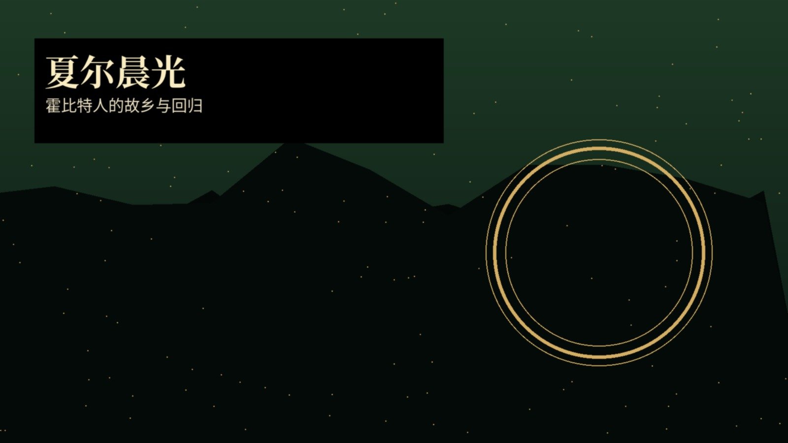
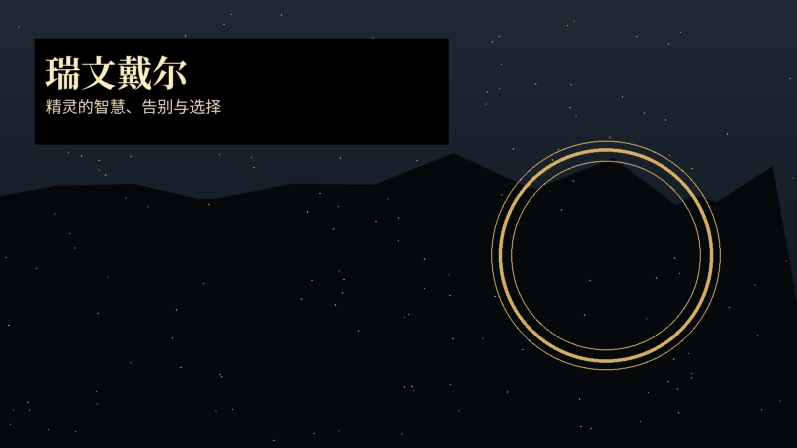
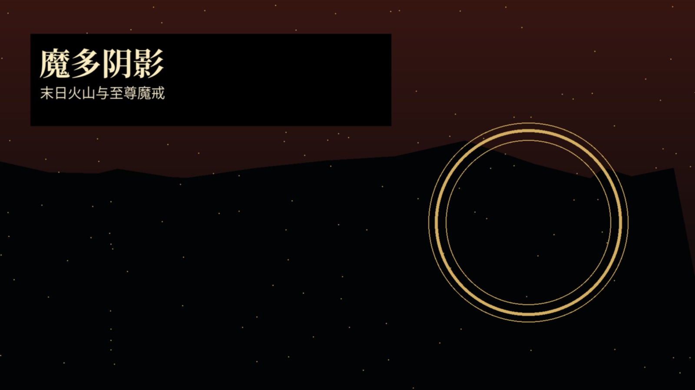

主界面导览
按照“电影 - 人物 - 地点 - 主题 - 音乐 - 附录”的顺序阅读，适合第一次系统了解，也适合反复查阅。下方每张图都可点击跳转到对应内容。
中洲音乐控制台 V1.1
音乐控制台现在放在正文中，不再悬浮锁定；阅读时可以直接划走。页面不会自动播放，必须手动点击，避免与其他音乐冲突。
离线原创氛围曲（可在 PPT 中嵌入播放）
这是一首原创离线氛围曲，不是电影原声，不涉及下载完整版权歌曲，便于无网环境演示。
经典主题曲第三方内嵌入口
选择曲目后在下方内嵌平台内搜索/试听；不把整首歌曲打包进文件，不强制跳转到其他界面。不同地区网络可用性取决于第三方平台。
电影三部曲
《护戒使者》
核心是“启程”：夏尔的平静被至尊魔戒打破，佛罗多承担无法由英雄独自完成的使命，护戒队在瑞文戴尔成立。影片以宏大世界观打开史诗，同时保留小人物视角。
- 关键词：夏尔、瑞文戴尔、护戒队、摩瑞亚、远征破裂。
- 主题：友情、诱惑、责任、选择。
《双塔奇兵》
中段结构最复杂：佛罗多与山姆进入魔多边缘，阿拉贡等人守护洛汗，树人对艾辛格的反击展开。影片让战争规模与人物内心压力同时升级。
- 关键词：圣盔谷、洛汗、树人、咕噜、双塔。
- 主题：绝望中的坚持、分裂后的信任。
《王者归来》
终章把中洲命运集中到两个方向：正面战场拖住索伦视线，佛罗多和山姆抵达末日火山。它的伟大不仅在战争场面，更在胜利之后的创伤、告别与时代转换。
- 关键词：米那斯提力斯、帕兰诺平原、黑门、末日火山、灰港。
- 主题：牺牲、加冕、回归、告别。
核心人物速览
佛罗多：承担者山姆：守护者甘道夫：引路者阿拉贡：归来的王莱戈拉斯：精灵视野金雳：矮人荣誉咕噜：执念与悲剧索伦：权力意志
人物关系图已重新制作，适合在手机上放大查看。
中洲世界百科

夏尔“家”的象征，也是理解佛罗多牺牲感的起点。

瑞文戴尔会议、智慧与护戒队成立之地。

魔多压迫、监视与权力欲望的极端空间。
附录一：人物关系图
附录二：中洲阅读地图
附录三：电影时间线
版权与播放说明
本文件包不包含《指环王》电影原声完整音频。经典曲目只提供第三方平台内嵌入口；离线音频为本包原创氛围曲，供阅读与演示使用。